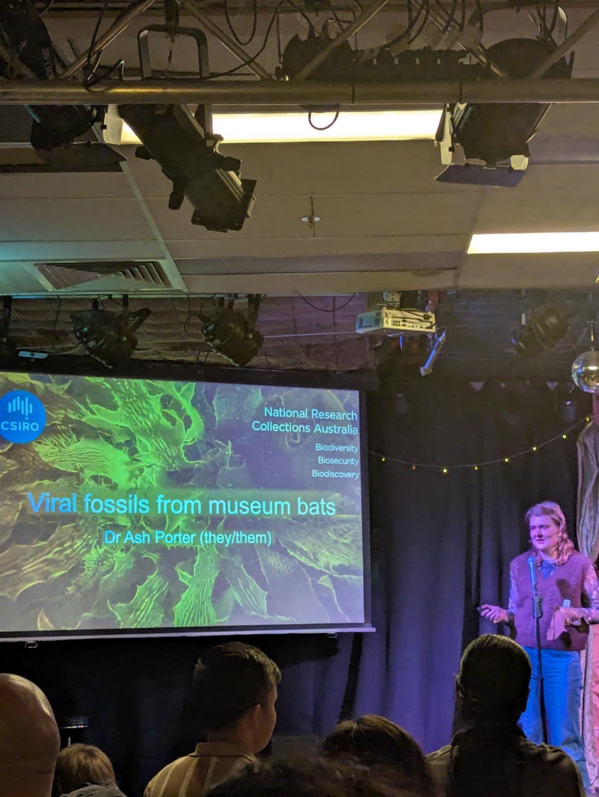
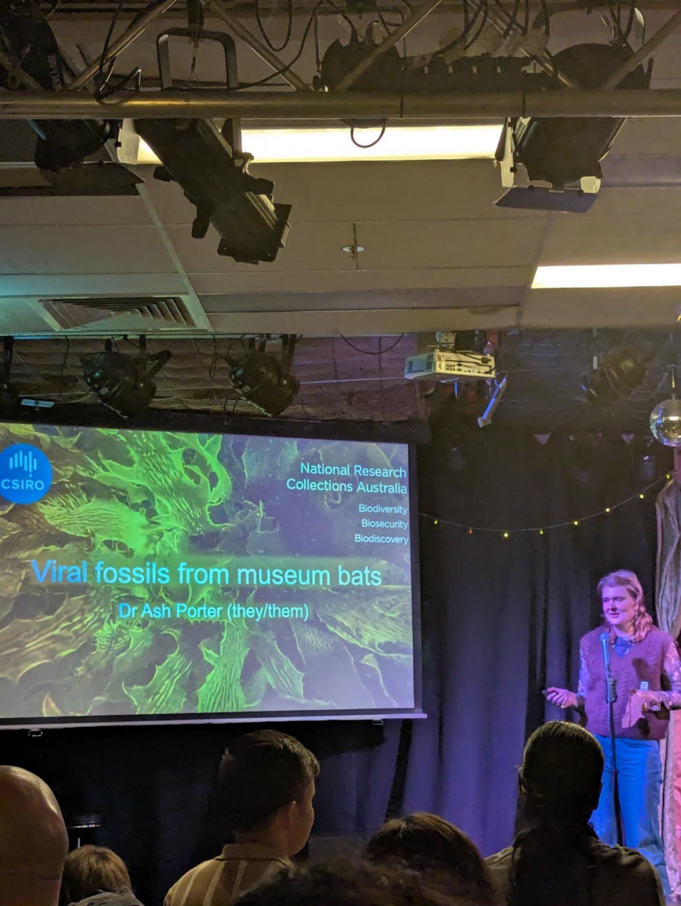

Skill Description
A Little Fuzzy is science communication, with openness to ambiguity and an iterative, exploratory process. I’ve developed this by appearing on the Fuzzy Logic Radio station as a cohost—researching, preparing and delivering content on scientific topics, and interviewing scientists during Pint of Science.
Subskills & Self-Assessment
- A: Research
- B: Voice Presence
- C: Conversational Skills
- D: Sharing Publicly
Checkpoint 1 to 2 growth is shown in a custom matrix (see reflective narrative below).
Reflections
Research (A)
I learned to quickly extract useful insights from scientific papers and convert them into engaging questions for the show. This marks a big shift from occasional curiosity to deliberate, applied research.
Voice Presence (B)
While I started at level 3 due to experience in Toastmasters and voice work, I haven't yet moved to creating my own content. Future work will focus on confidently taking ownership of scripting and delivery.
Conversational Skills (C)
Through radio and science events, I've expanded beyond casual talk into purposeful dialogue—one highlight being a thoughtful email of appreciation from interviewee Tirath.
Sharing Publicly (D)
I still rely on external cues (e.g. Fuzzy Logic or assessment prompts) to publish work. My goal is to independently publish a project by Checkpoint 3.
Evidence Gallery
 

Checkpoint Growth
Skill growth from Checkpoint 1 to 2 is visualized in both narrative and matrix formats. Notable areas of improvement include confidence in live discussions, and ability to independently research science topics for a general audience.